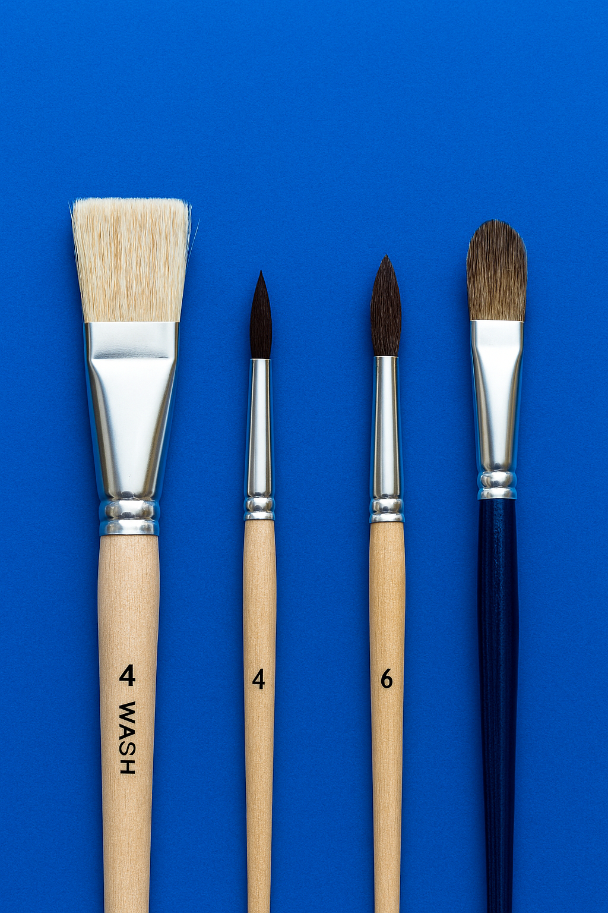

Face painting is both a creative hobby and a professional art form that transforms the human face into a living canvas. Using safe, skin-friendly paints, artists design everything from whimsical butterflies and superheroes to intricate cultural patterns and festival looks. It’s a popular activity at parties, fairs, and community events, where it brings joy, self-expression, and a touch of imagination to people of all ages. Beyond entertainment, face painting can also be a profession, with skilled artists offering services for celebrations, theatrical performances, and promotional events. At its core, face painting combines artistry, storytelling, and connection, making it a vibrant way to celebrate creativity.
To learn how to facepaint yourself, there are a couple things you need to know:
Also, see the embedded live Tableau dashboard.
All paint used when facepainting needs to be paint that is specifically formulated for facepainting. These paints are non-toxic, easy to wash off, and do not crack while being worn. There are two main types of facepaint to choose from.
Oil-based paints are more difficult to work with. They have a greasy texture and they do not gather on the brush as easily. These paints do not wash off easily with water and are generally looked down upon in the facepainting industry.
Water-based paints are easy to work with, behaving similarly to a thick watercolor or gouache that many artists are used to. These paints are water activated, giving the artist full control over the consistency of the paint. It is easy to load this paint on the brush. Water-based paints are standard for quality facepainting.
Some of the best paints on the market are by DiamondFX. Check them out here!
After gathering your materials, you must learn the proper painting techniquies. The best way to learn is through experimenting. I find it easiest to get used to my brushes and paints while working on my own arms or legs rather than jumping straight to painting on someone's face.
While alot of learning comes from experimenting yourself, here are a couple tips and tricks to help get you started:
A good way to think of this is "a ballerina always stands on her toes." To create graceful lines that are thin and polished, keep your wrist light and use the tip of the brush rather than pressing down so that the brush is on its side. (This is especially important when using a round brush!)
Getting the consistency of the paint right can be difficult. You want the paint to be wet enough to flow smoothly off the brush, and dry enought that the paint isn't pooling, dripping, or running. Runny paint is a facepainter's worst nightmare when you are trying to avoid getting paint in someone's eyes or mouth.
To create consistent and professional looking lines, try to do as much as possible in one stroke. This helps to prevent separated line segments that vary in pressure or thickness.
Understanding proper techniquies will help you to create beautiful facepainting designs that are clean and polished. The videos linked below are a great resource when learning or experimenting with new techniques.
As with anything, practice makes perfect! There is no other way to improve your facepainting skills than through practice. You may find it beneficial to practice on your own arms, legs, and face. Another way to practice is to have a family member be your canvas for a time. Start offering yourself for parties and events and opening yourself up to opportunities to practice. Good luck on your facepainting journey!
This is the live Tableau dashboard that I have embedded.